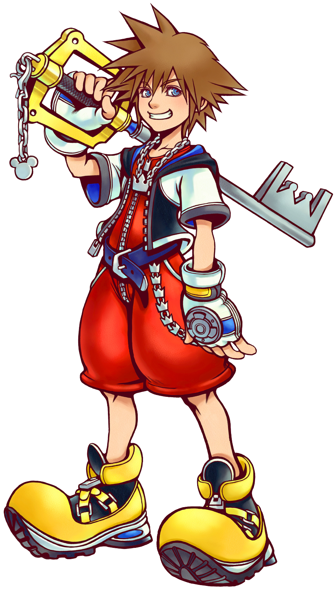
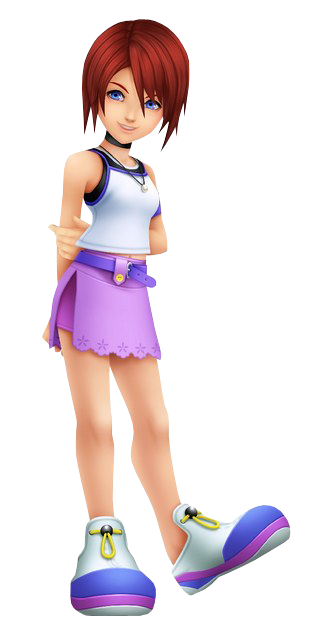
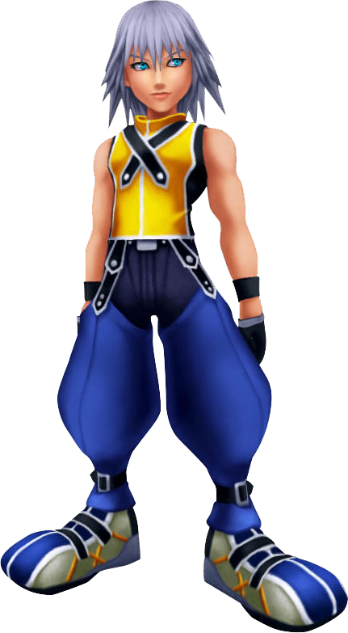
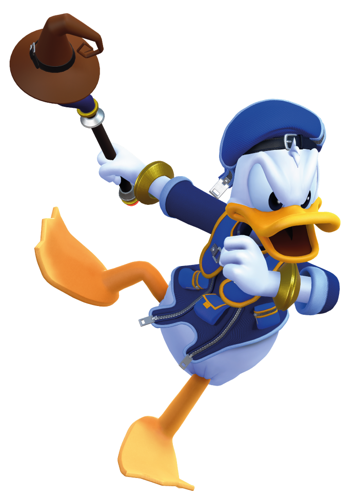
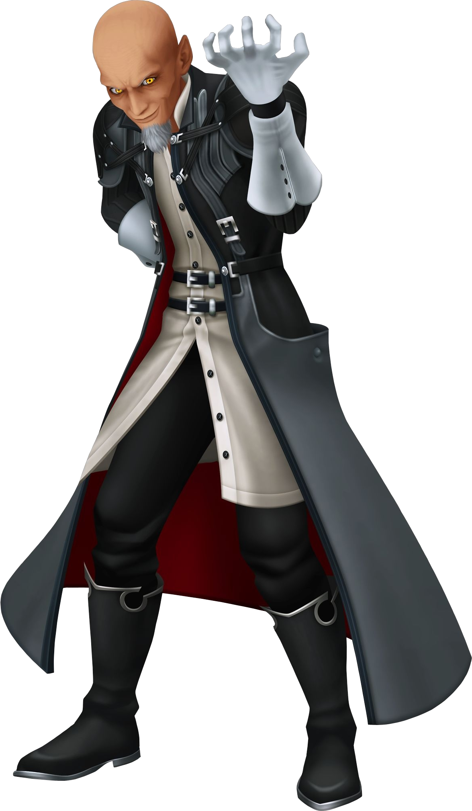
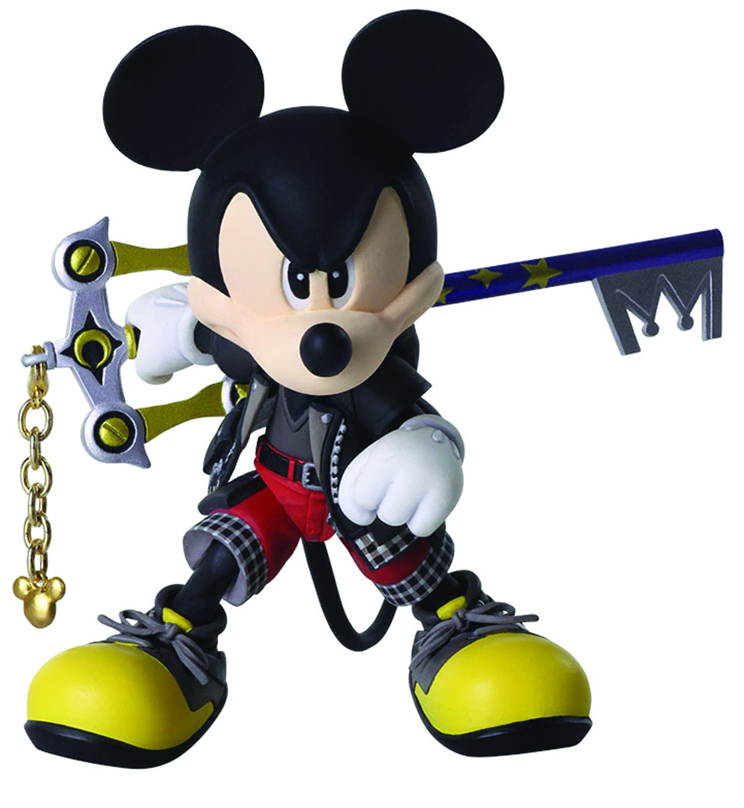

Characters
| Images | Name | Role |
|---|
|  | Sora | Sora is a cheerful teenager who lives on the Destiny Islands, with his best friends Riku and Kairi. When they plan to go on a journey to see other worlds, they are separated by creatures known as the Heartless. Sora is taken to another world where Donald Duck and Goofy then recruit him in their journey across various worlds to aid their king, Mickey Mouse, while Sora searches for his friends. |
|  | Kairi | Kairiis the main female protagonist of Kingdom Hearts, and the best friend of Sora and Riku. As one of the seven Princesses of Heart, she is cast adrift from her homeworld of Radiant Garden at a young age as part of Xehanort's experiment to locate the key bearer, which eventually brings her to the Destiny slands. |
|  | Riku | Riku (リク) is a childhood friend and rival of Sora who resides with him and Kairi on the world of Destiny Islands. During the invasion of Heartless in Kingdom Hearts, Riku immerses himself in darkness to discover new worlds beyond his home. |
 | Goofy | Goofy is a peaceful knights' captain who performs supportive and defensive techniques with a shield. His main purpose is make you laugh with his "goofy" phrases. |
|  | Donald Duck | Donald is a magician who is proficient with a variety of offensive and supportive spells. Although one of his spells is cure, he will almost nver use it, even if you modify the character to only heal you. |
|  | Xehanort | Xehanort is the main antagonist and is introduced as an elderly Keyblade Master from the Destiny Islands who acquired the means to transplant his heart into the bodies of others, which he uses to orchestrate the events of the games up to Kingdom Hearts III to suit his agenda. |
|  | King Mickey | Mickey Mouse is depicted in the Kingdom Hearts series as the king of Disney Castle. Mickey is absent for most of the original game, which sees him departing his world to discover a solution to the Heartless' invasion, leaving instructions for Donald and Goofy telling to find and protect the Keyblade wielder(Sora). |